Newest. Copy/Pastie. Petfiles. Breedz main. Breedz info. Breedz odds. Scene/toy/clo
Go to my Infobits
for more text bits and pieces of info on editing for all versions of the games.
Go to my LNZ breakdown chunks
for some very useful information on the LNZ files which make up the core of your new Petz breed. Also helps in
understanding the .CLZ part of a clothing file etc. Really. No, really. Do go and see. It might stop you from
writing to me to pick my brains; most of my brain-pickings are there :-)
NOTE: My tutorials mostly tell you how to edit in the days before Nicholas' tools were created for us all. I keep the tutorials and howtos here anyway because they are still useful. But wherever you see mention of Notepad, you can use the same info when editing the LNZ or CLZ section in LNZPro. And my LNZ info chunks are still invaluable.
for my easy-edit Breedz packages Go To:
Petz 5 catz / Petz 5 dogz
Petz 4 catz / Petz 4 dogz
Petz 3 catz / Petz 3 dogz
Petz 3 catz Iternational / Petz 3 dogz
International
See under Scene/toy/clo for easy-edit Mice as well as easy-edit case doors etc.
Ballz conversion chart for Catz to Dogz
Ballz conversion chart for Dogz to Catz
Dogz ballz number list. Dug out of my tutorials and tidied up.
Catz ballz number list. Dug out of my tutorials and tidied up.
NOTE: Some files that we hexers want to edit are .DLL files. Windows, by default, has files of this type "hidden" -- presumably as some kind of safety feature, but in our case we need to see them. So if you cannot see them on your machine, open My Computer or Windows Explorer, choose View and Options, and then under View make sure that "Show all files" is ticked. While you're about it, un-tick "Hide MS-DOS file extensions", because that's a nuisance too.
Copy / Pasties for use with my "Easy-edit" packages
~~~~~~~~~~~~~~~~~~~~~~~~~~~~~~~~~~~~~~~~~~~~~~~~
These are text files. If you left-click on the link, you should be able to select the whole of the text which
appears in the next page and copy/paste it into Notepad. Save it as a text file somewhere on your hard drive,
and then follow the instructions to use it in your chosen .lnz file.
Hoop earrings on petz copy/pastie sections
copy/pastie dane-eared dalis
A copy-pastie for wingz on a maine coon breed
Easy-edit Wigz on breedz/litterz
Easy-edit Wingz on dogz breedz/litterz
Easy-edit Wingz on catz breedz/litterz
Variation-stuffed Orange shorthair adult lnz
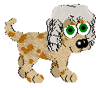
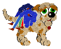
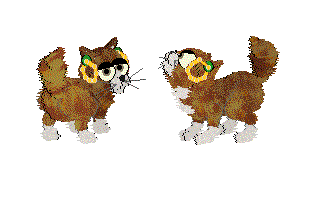
Copy/pastie adding wingz to Vickie's Neko
NOTE: This is for your personal use only. Please abide by Vickie's rules when altering her files.
I'm hoping that, if you compare this with the Maine Coon Wingz copy/pastie, you'll be able to understand how Add
Ballz work.
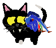
(pet not downloadable)
Where to find latest "Howto"s etc
~~~~~~~~~~~~~~~~~~~~~~~~~~~~~
Usually the newest items are at the top of the relevant section -- Petfiles (for editing the actual pet files), Breedz main (for major breedz tutorials), Breedz info (for important information -- variations, 2nd-gens, etc), Breedz bits (for all the odds and ends, such as ears and tails etc), Copy/Pasties, Scene/toy/clo (for scenes, toyz, clothing, and Doors-and-mice easy-edit packages and "howto"s). Some things are a little different, though...
Go to my LNZ breakdown chunks
for my latest
delvings into the guts of hexing.
will always contain my latest information on the .lnz files as and when I have the time to write my notes as
clearly as possible for you
Go to my main tutorial page
for the stuff that
doesn't fit anywhere or is relevant to other games also,
such as how to fix some problems in ResHacked files. This will always contain my latest tips and bits of
information about everything else I can think of, which doesn't fit neatly in specific Babyz, Petz or Oddballz
tutorials pages, as and when I think of it or have the time to write it down for you.
NOTE 1: You can use the information that's in my hexing tutorials for Petz 4 to help you to hex-edit in Petz 5. The files are basically the same, with only a few minor differences which I cover in my converting "howto". I promise you, you don't need fresh tutorials for Petz 5, although I have done my best to update all my older ones anyway. All the newer Petz "howtos" are for Petz 5 as well as the earlier games -- except for filmstrip editing. In Petz 5 the filmstrips need to be split into individual frames, which means that filmstrip-based toyz editing and making clothes show up on the shelf as objects not already somewhere in the game is not a sane thing to do by hand in Petz 5. You need a special tool such as Tinker for that.
NOTE 2: Hex-painting and the creating of hexed litterz is usually -- and up until I released info on petfile editing was always -- done by hex-editing a breedfile without renaming it, and adopting pets from the edited breed. If you want to "hex-paint" by editing an individual pet, then that seems like a lot of effort for very little return -- but if you want to do it, take a look at one of my advanced "howtos" on pet editing, in the "petfiles" section of this page. Or, as of the year 2005, grab LNZPro from my "Nicholas' Tools" page -- you can edit pet files with that now.
NOTE 3: Several of my breed-hexing "howto"s contain example breedz. These breedz just happen to be the ones that I was checking my facts with as I wrote the relevant tutorial, so I popped them into the zip. I usually work with Petz 3 (it's fast to load) or Petz 4 (it has good error messages and is fairly quick to load), so the breedfiles are likely to be for one of those games. You are hexers, or else you wouldn't be interested in my "howto"s and tutorials, would you? So my theory was that if you want to see my results in action, you can easily either copy the .lnz into the appropriate breed in your chosen version of the game, or you can convert the breed to that version for your own use. It appears that this has simply muddled people; sorry about that. I've been intending to convert all of them, therefore, and post them on the "tutorial examples" page. This is very low on my list of priorities just now, though!
Playscene easy-edits, Toyz, Clothes, Doors and Mice.
~~~~~~~~~~~~~~~~~~~~~~~~~~~~~
Changing the tail colour on the yarn ball toy
NOTE 1: You will notice in various places I say that Petz 5 SPR filmstrip files are not editable. Individually, by hand, this is true; the filmstrips have to be chopped into individual frames for editing, and they are even more difficult and time-consuming to split apart by hand than the filmstrip-sections of earlier games. I have not yet written up a "howto" for it -- and now I never shall, because there is no point, LOL! Tinker is now available for the task, available from my "Nicholas' tools" page, and wannabe filmstrip editors can make a whole range of great toyz etc without the drudgery :-) Really all my filmstrip-editing tutorials have now become redundant, useful only to hexing purists and historians... They will have served their purpose in filling the gap while no tool was available, and in giving the programmers Jonathan Grinshpan (of Oddballz Eggz Scrambler fame) and Nicholas (of Tinker fame) handy information for tool-making.
NOTE 2: Some files -- containing case doors etc -- that we hexers want to edit are .DLL files. Windows, by default, has files of this type "hidden" -- presumably as some kind of safety feature, but in our case we need to see them. So if you cannot see them on your machine, open My Computer or Windows Explorer, choose View and Options, and then under View make sure that "Show all files" is ticked. While you're about it, un-tick "Hide MS-DOS file extensions", because that's a nuisance too.
An easy-edit Kitchen kit for petz 3
An easy-edit Adoption Centre for petz 3
Extra AC file for International petz 3
An easy-edit Toy Closet kit for petz 3 and P3
International
NOTE -- in my included text file on playscene editing, I apparently forgot to include this important bit of
infomation:
if you have trouble making your scene show up, when you change the ID number, make sureyou change not just one or more of the two main bytes. Change the 05 also, there inseveral of the original scenes, which is a kind of flag byte. Change it to 01, 02 or 03-- all will give you a visible scene.
My thanks to Minibyte for poking at me until I fixed that point :-)
Using LNZPro to make scenes show separately
An easy-edit Family Room kit for petz 3 and P3
International
An easy-edit Clothes Closet kit for petz 3 and P3
International
Easy-edit Case, AC door, and mice etc for petz 3
Extra items required for petz 3 non-English version
Easy-edit Case, AC door, and mice etc for petz 4
split Case filmstrips to help petz 3 and P3 Int hexers
Petz 4 version of split filmstrips will not now be necessary. See note above about Tinker.
Go here for Petz 4 Playscene Easy-edit kits
Changing Petz 5 Scene backdrops (and sounds)
Extracting stuff from Petz 4 playscenes to use in Petz 5
Petz 5 case doors etc can be swapped (also good for PII,3,4,etc)
Petz 5 mice can be edited, as well as the stick etc:
Click here for a page with instructions and info, or
click here for my easy-edit Petz 5 Mice etc package.
Easy-edit Adoption Centre kit for Petz 5
I have made the backdrops 256-colour to make a smaller download, and I have altered the daytime backdrop to the
Petz 3 or Petz 4 one for nostalgia freaks like me :-) If you want the Adoption Centre birdsong, download this 'Sounds For P5 playscenes' file.
"Easy-edit" Playscene Editor Petz
5
Actually there isn't a lot of point to this one, but it's had all the un-needed rubbish cut out of it for people
who don't like files bigger than they need to be, and you can edit the two icons that appear in the drop-down
"go to" menu if you wish. Useful for those who like to customise their game as much as possible :-)
Easy-edit Family Room kit for Petz
5
I have made the backdrops 256-colour to make a smaller download, and I have altered the weather-effects .spr
file also, partly to disable the weather and partly to make a small download. If you want the weather .spr back
again, download this file. It's almost as big a download as
the easy-edit playscene, at over 3 megabytes! If you want the family room sounds, download this 'Sounds For P5 playscenes' file.
An easy-edit kit for making new treat toyz for petz 3
An easy-edit kit for making new treat toyz for petz 3
International
An easy-edit kit for making new treat toyz for petz 4
Un-hiding and giving shelf graphics to difficult
toyz
This is for Petz 3, Petz 4, Petz 5 and Babyz games. It shows how you can use your hex
editor to make "hidden" toyz show up properly on shelves in all the games, and shows you how to get a
little more into your Petz 5 game than you had before. It is not sensible to edit Petz 5 .spr filmstrips
by hand, so there is no info about that, sorry; go to my "Nicholas' tools" page and grab Tinker instead.
Changing "Pointers" in files
For people who get puzzled about why clothes or toyz don't look right on the shelves
after filmstrips etc have been changed.
Editing Petz II, 3, 4, Babyz and Oddballz Filmstrips
(advanced)
Toyz editing, clothes showing up separately, oddballz eggz on shelf, etc.
Simple filmstrip editing
hex-painting (colouring) for toyz, clothes on shelf, etc
Editing toyz in Petz games II, 3, 4, 5.
Includes very brief info for Catz 1 and Dogz 1.
Editing clothes in Petz 3, 4 and 5
FAQ -- Petz 3-4 hidden toyz
FAQ -- petz shirts
Pet file (and baby file) editing
~~~~~~~~~~~~~~~~~~~~~~~~~~~~~
NOTE: As from the middle of 2005, we have had the brilliant LNZPro, available from my Nicholas' Tools pages. With this, you can open a pet file and edit the .LNZ sections to your heart's content, adding and removing ballz without having to think about the checksum, exactly as you would edit a breedfile. Some other things are editable in a petfile with it also. Most of what's in the tutorials in this section was written pre-LNZPro so, although the info is still valid it's mostly just being kept online here for the interested few.
Basic Pet And Baby File Editing (July 2004)
Apart from the "basic" tutorial, these "howto"s tend to assume that you already know how to edit .pet files. Some of them are also relevant to editing baby files, but don't let that confuse you. The methods are the same.
Adding stuff into pet files, example fangs on a cat
A rare fixable corruption in a pet or babyz
Bringing Runaways home in Petz 3, 4 and 5 as well as Petz II
Unsticking pregnancies in Petz 3, 4 and 5
I had this pregnancy fix in with one of my tutorials, but I thought I'd better put it up
separately and make it (I hope) easier to follow
Bringing Runaways home in Petz II; more details
Get your Petz II runaways fully recovered at last!
Cure your Desert Lynxes, Chinchilla Persians etc of "Sleepy
Sickness"
Updated with screengrab illustrations 13 April 2004
Edit the Trotting and Floofing gene
Cure your already-adopted Alley pets of the Eternal
Sickness!!
Updated with screengrab illustrations 13 April 2004
Why is my pet covered in black blobs (etc) updated 08 March
2004
This one tells you about Paint Ball oddities, apparently ineradicable blobs on the pet,
the #IND Nasties.
Edit eyelids in pet files
This "howto" assumes that you already know how to edit .pet files. It tells how to do
the job even when there is no [Paint Ballz] section, also how to change the number of digits in the
eyelid colours.
Changing Pet eyelids (yes, again)
Changing Pet eyelids in more detail
Pet eyelids adding or subtracting digits
Pet editing without a Paint Ballz section
Pet eye colour -- how?
Finding your pet's ID when there's a problem
When you've fast-forwarded, here's how to fix your pet's birth
date
Changing the breed in a petfile
Not sure why you'd want to -- it's much easier to change the name and ID in the breedfile --
but here it is for those who do want to know :-)
Updated missing-breedfile error "howto"
This is the "error" part of the "More Advanced Pet And Baby Files Editing", separated out
for your convenience. For the complete "howto", see below
Changing gender and neuter status
separated out from the main "howto"s for your convenience
More Pet and Baby file editing
Putting bellybuttons on Babyz, and how to increase a pet's eye colour to a greater-digit
number or decrease it to a lesser-digit number. Includes example babyz and petz.
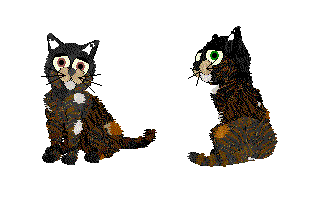
Changing Furfiles on Pet Files
This is the updated part of the "More Advanced Pet And Baby Files Editing", updated to explain more about how to
give textures to pets. If you need the example pet etc, then download that file instead, you'll see it further
down this page as having been updated 20 June 2003.
More Advanced Pet And Baby Files
Editing (Updated 20 June 2003)
Includes examples
Advanced Pet And Baby File Editing (Jan 2003)
Pet Editing -- Tabby stripes.
Includes example pets etc.
Extracting Petz 5 pictures from Pet files
Getting stubborn Runaways home
(works for Petz 3, 4 and 5)
Note 1: If you play with a pet in Petz 5 you can not play with it in Petz 4 or 3 again. Petz 5 puts extra
data into a petfile, and we would need to alter checksums in order to even try removing that.
Soon we may have a tool to do precisely that, and then maybe there will be more
"corruptions" that we can fix. But by hand, for now, the only thing that can we can do is to "clone" your
pet from the data within it, either directly into another adopted pet via LNZPro or into a breedfile and
re-adopt it as a puppy or kitten from the Petz 3 or Petz 4 Adoption centre. It will lose its memory and
history, but the body will be your pet's. You can even pop your original pet's personality/genetics into
the new petfile, although out of consideration for the new pet I'd be inclined to do this in a copy
of the new pet. And no, I haven't got a "howto" up on how to do this; it's complicated "surgery" and
I've still got to find a way of explaining it.
Meanwhile click here for a pictorial partial breakdown of the
structure of a .petfile.
Note 2: Petz 3 and 4 petz can be swapped between the two games.
Petz 3 and 4 petz can be opened in Petz 5, but Petz 5 petz cannot be opened in Petz 3 or 4.
Petz II petz can be imported into later games, but their petfiles can never be opened or imported into
Petz II.
Note 3: Petz II petz do not have the same editable .lnz sections as the later games.
Breedfile editing -- Main tutorials
~~~~~~~~~~~~~~~~~~~~~~~~~~~~~
go down to "Breedfile editing -- Breedz bits and pieces"
for individual "howto"s on items such as ears, tails, etc.
Go to "Breedfile editing -- Special Info"
for my 2nd-gen status report/tips and stuff on variations, moving ballz around, and the
ID number.
Absolute Total Easy-Peasy Pet To Breed,
Honest, It Doesn't Come Easier, Trust Me -- I'm A Hexer! October 2005
Ultra easy Pet to breed "howto" Updated Aug 2004
It tells you how to take a pet and make a breed or litter from it using my external .lnz
method; also it gives info on how to make your pet-based breed non-overwriting.
For those who want to make their own easy-edit breedz, here is a precursor to my easy-edit packages:
See your petz at the Adoption Centre while you edit
or at least, almost while you edit. Keep the game running, take a pet out of the AC,
edit the .lnz "on the fly" and take another pet out to compare -- this method is easy quick, and less
prone to corruptions than using Resource Hacker!
Hex Painting to make litterz or overwriting breedz
Hexing Petz II, 3, 4 and 5 Breedz -- Part 1
Hexing Petz II, 3, 4 and 5 Breedz -- Part 2
Hexing Petz II, 3, 4 and 5 Breedz -- Part 3
Advanced hexing of Petz breedz
Updated Apr 2003. Originally for Petz 2, 3, 4; works for Petz 5 also.
Breed editing in Catz 1
For Windows and Mac users, updated and including a colour chart in bitmap form.
Breed editing in Dogz 1
For Windows, basically. The .LNZ information is the same for the Mac version of the
game.
How to easily make your own overwriting versions of
any P3-5 breed
Converting Petz breedz from one version to
another
This has been updated somewhat; it includes converting Petz 3 breedz from English to
International, also converting to petz 5. It attempts to cover converting back and forward between all
versions of the Petz games. Note that, since this tutorial was written, Resource Hacker became usable and
it swept the newer hexing community by storm. The trouble with this is that, if you are trying to convert
a ResHacked breed, it's no longer so simple to do it in a hex editor, because Resource Hacker moves
things around inside the file when it compiles and saves. If the ones you want to convert have been
"ResHacked", then your best bet is either to copy out the .lnz sections and any bitmaps, and make an
overwriting breed using my External-LNZ breedz, or to get ResHacker yourself and become familiar with its
use. I do not do Resource Hacker tutorials, although I do have hints on odd things such as how to insert
bitmaps with it.
Converting Petz 4 breedz to Petz 5
NOTE: With LNZPro 3.2 or later, you no longer need to convert breedz between Petz 3, 3 Non-english, 4, and 5.
Just open your breed in LNZPro, choose "Convert to Unibreed" from the File menu, and follow the
instructions.
Swapping behaviour of breedz.
This tells you how to change the personality (or attitude) of one breed for that of
another. It also talks about changing sounds for sound-stripped breedfiles. It works for all versions of
the game, and for dogz breedz as well as catz. It includes an example cat breed for Petz 3, 4 and 5; the
Orange Shorthair with a choice of personalities. For instance, the picture below shows the OSH breed with
Alley Attifude. If you want to change the personality of a Poodle for, say, that of a Labrador, the same
method can be used.
NOTE Since LNZPro has got better and better, you can now swap the SCP (attitude) files with utmost
simplicity. Open the breedfile which has the SCP that you want. Choose Edit, "Save to file". Now open the
breedfile in which you wish to replace the SCP. Choose Edit, "Replace from file". Save. Ta-da! Changed
SCP.

How to make your breed show up separately
Changing the default pet name at the AC
How to fix sleepy and alley sicknesses in breedz
Hexing Mice (and roaches) in your game
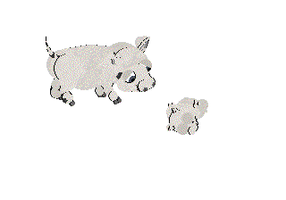
Making Petz 5 Pigz adoptable
Also making it so that all pigz from previous versions of the game can be imported.
Petz 5 Breedable Pigz
Read the included instructions carefully to get your pigz and pigz mixes to breed.
Petz 3 Breedable Pigz
Pig family to go with P3/P4 Breedable Pigz file
Bunny family to go with P3/P4 Breedable Bunnyz file
Petz 3 breedable Bunnies
Petz 3 breedable Bunnies (international ver)
Petz 4 Breedable bunnies
Petz 4 breedable Pigz
Breedfile editing -- Special Info
~~~~~~~~~~~~~~~~~~~~~~~~~~~~~
Variations
This is my "Howto" on Variations, updated to explain in greater depth about hooking up
patches with ball-colours etc. 27 May 2003.
Still more on Variations. And how to use
[Omissions].
Please read this if you are having Variation problems
Making a variation be always the gender you want Updated 10
april 2004
Making furfile variations and stretching noses and
ears
Blazes, Catz ear problems, Furfile explanations, Variations
Moving Add Ballz around
x, y, z positions -- how to figure it out
Paint Ball xyz oddities, or "Why is my pet covered in black
blobs"
Status report on 2nd-gen research Updated lotsa new stuff 11 April
2004
Another way to deal with 2nd-gen dogz nose problems
Some 2nd-gen Add Ball and Linez problem fixes
Updated Apr 2003 -- some 2nd-generation
problems
with ball-colours and non-joined ballz, scrambled chickenz heads. Also fixing
Whiskers.
Breedfile editing -- Bits and pieces
~~~~~~~~~~~~~~~~~~~~~~~~~~~~~
How to add stuff from clothing items to your breed
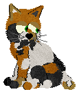

How to make Add Ball tattoos

Tails lengthening and whiskers removing
Teddybear ears on catz
The Wizard.bmp problem
Alleycat eyes on Dogz
My "flighty-dane" type wingz -- if you're having problems
Dogz legs and Catz ears
Making your baby stage look different from the
adult
Make your own Mystery-moticon petz
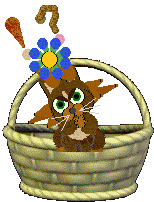

Make your own emoticon petz with variations
Putting various different drop tails on catz.
Shows four different drop-tail types; Includes sample breed. Yes, it really is a cat. I
used my "102" breed but with some differences.
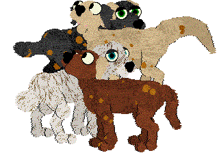
Change and expand drop-tails -- Dogz and Catz
Giving your petz' eyes a texture
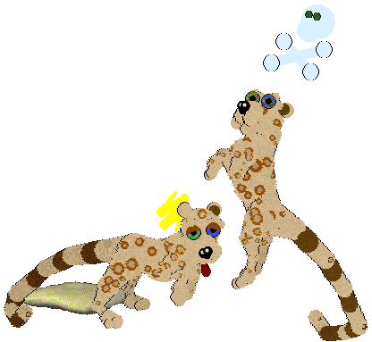
Slant legz on Dogz and round ears on Catz
I had this one up for a while, on the Infobits page, but people were having difficulty
finding it there. So here it is now :-)
Unicorn horns, talons, spikes...
How to add lots of different spikes to your breed, including add-ons all the way down
the spine, to the toes, and to the head. Includes four different example breedz.
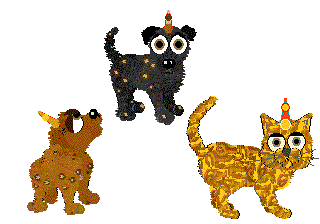
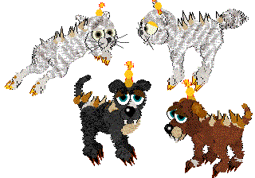
Making a Baby or Pet with missing limbs.
and before anyone sends me hate-mail for this one, please read the readme. This tutorial
is intended as a service for people who need to relate to virtual playmates who do not have the "body
perfect".
Bunny ears on catz and dogz.
Shows three examples of how to attach bunny ears, and there's a set of fangs on the
Scottie too. Includes example breedz.
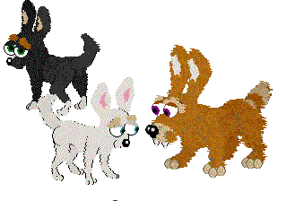
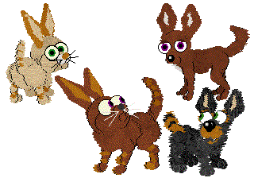
Bunny ears on a Great Dane.
Yes, I still get asked about ears!
Ears and tails
Yes, ears again on dogz -- this time, how to make a pup's ears different from an adult's
-- and how to make up-and-over tails. Includes example breeds.
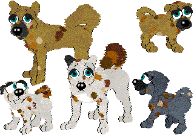
Wings on Breedz
How to put wings on your catz or dogz breed. Includes example breedz
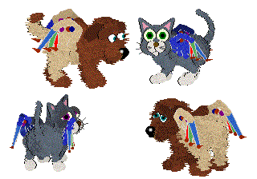
Aargh, yet more ear-changing, on a Dane.
Chihuahua ears again. Includes example breed.
Please, people, no more ears -- I'll go mad if I hear another "how do I put x ears on a y?" question.
Just read the "howtos" and try to understand; then you'll be able to put any type of ear on any other
breed.
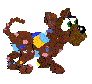
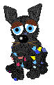
Even more ear-changing, and whiskers on Dogz
It's Chihuahua ears this time. Includes example breed.
Details on how to make drop tails.
Includes example breed.
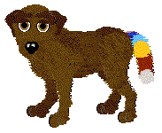
Feathering tails, legs, necks, chests, bellies etc
on breedz updated April 30th
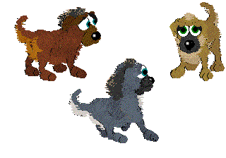
Yet another ear-change on Dogz
this time up-pointing ears on a Lab. Includes example breed
Putting floppy ears on a Dane
Includes example breed
Putting one flop ear on a Dane
Includes example breed
Putting flop ears on Catz
Includes example breed
Making Leopard spots on Catz
Includes example pets
Making Leopard spots on Dogz
Includes example pets
Making Leopard spots speedily
(but with no texture). Includes example breed
FAQ -- how to make minis
FAQ -- deleting bytes (for hex editor methods)
FAQ -- spots on breedz
FAQ -- fuzzy feet (etc)
FAQs -- surprise chicken blobs
FAQ -- pigz etc (why babies so small)
FAQ -- changing nose colour
FAQ -- changing default AC clothes
Older tutorials and FAQs
~~~~~~~~~~~~~~~~~~~~~~~~~~~~~
All have been updated and improved at least slightly now. Look in the relevant sections above for the ones that
you wish to see.
.